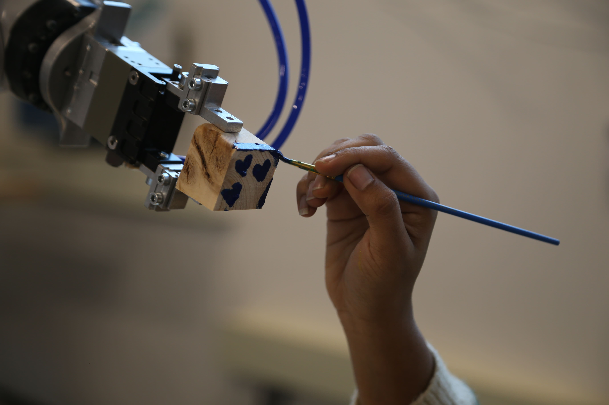
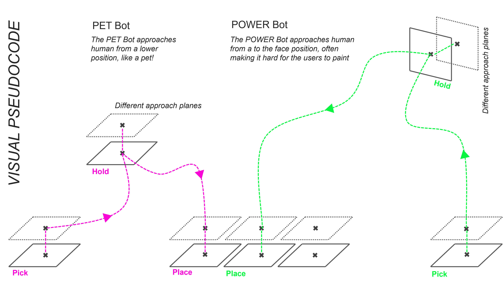

This project frames human-robot interaction as a co-creative performance. The robots collaborate with two humans in a timed painting exchange, offering wooden blocks to be painted before retrieving and stacking them into a choreographed composition.





While the process appears improvisational, the structure is encoded, placing robotic motion at the center of aesthetic decision-making. The final artwork is not predefined but emerges through interaction: a tangible artifact of shared authorship between human intuition and machine logic.

The path is planned differently for both robots. The PET Bot approaches from a lower angle, following soft, curved motion paths that feel intuitive and accommodating, allowing users to interact with ease. In contrast, the POWER Bot moves assertively from the front, tracing dominant, arched trajectories that often challenge the user's space and alter the dynamics of co-creation.